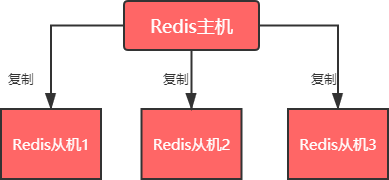
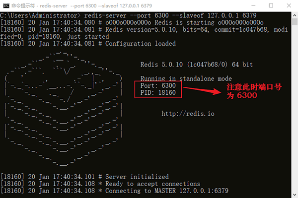

Redis Cluster主从模式详解
在软件的架构中，主从模式（Master-Slave）是使用较多的一种架构。主（Master）和从（Slave）分别部署在不同的服务器上，当主节点服务器写入数据时，同时也会将数据同步至从节点服务器，通常情况下，主节点负责写入数据，而从节点负责读取数据。
如图 1 所示，Redis 主机会一直将自己的数据复制给 Redis 从机，从而实现主从同步。在这个过程中，只有 master 主机可执行写命令，其他 salve 从机只能只能执行读命令，这种读写分离的模式可以大大减轻 Redis 主机的数据读取压力，从而提高了Redis 的效率，并同时提供了多个数据备份。主从模式是搭建 Redis Cluster 集群最简单的一种方式。
输出结果如下图：
如果你注意观察服务端的话，您会看到以下提示：
您也可以使用下面的命令来创建主从模式。启动一个服务端，并指定端口号：
打开一个客户端，连接服务器，如下所示：
新建 redis_6302.conf 文件,并添加以下配置信息：
虽然主从模式存在上述不足，但它仍是实现分布式集群的基础，后续将介绍《Redis集群：Sentinel哨兵模式》，它同样依赖于主从模式实现。
主从模式解析
主从模式的结构图如下：

图1：Redis 主从模式
图1：Redis 主从模式
如图 1 所示，Redis 主机会一直将自己的数据复制给 Redis 从机，从而实现主从同步。在这个过程中，只有 master 主机可执行写命令，其他 salve 从机只能只能执行读命令，这种读写分离的模式可以大大减轻 Redis 主机的数据读取压力，从而提高了Redis 的效率，并同时提供了多个数据备份。主从模式是搭建 Redis Cluster 集群最简单的一种方式。
主从模式实现
Redis 提供了两种实现主从模式的方法，下面进行逐一介绍。为了方便演示，我们只从一台机器上搭建主从模式。1) 使用命令实现
使用命令在服务端搭建主从模式，其语法格式如下：redis-server --port <slave-port> --slaveof <master-ip> <master-port>执行以下命令：
#开启开启一个port为6300的从机，它依赖的主机port=6379 C:\Users\Administrator> redis-server --port 6300 --slaveof 127.0.0.1 6379
输出结果如下图：

图2：Redis 主从模式
接下来开启客户端，并执行查询命令，如下所示：
图2：Redis 主从模式
C:\Users\Administrator>redis-cli -p 6300 127.0.0.1:6300> get name "jack" 127.0.0.1:6300> get website "www.biancheng.net" #不能执行写命令 127.0.0.1:6300> set myname BangDe (error) READONLY You can't write against a read only slave. 127.0.0.1:6300> keys * 1) "myset:__rand_int__" 2) "ID" 3) "title" 4) "course2" 5) "website" 6) "age" 7) "user:2" 8) "salary" 9) "mystream" 10) "key:__rand_int__" 11) "user:uv:2021011308" ....注意：此时 port=6300 的服务端界面不能关闭。从上述命令可以看出，port =6300 的从机，完全备份了主机的数据，它可以执行查询命令，但是不能执行写入命令。
如果你注意观察服务端的话，您会看到以下提示：
[18160] 20 Jan 17:40:34.101 # Server initialized #服务初始化 [18160] 20 Jan 17:40:34.108 * Ready to accept connections #准备连接 [18160] 20 Jan 17:40:34.108 * Connecting to MASTER 127.0.0.1:6379 #连接到主服务器 [18160] 20 Jan 17:40:34.109 * MASTER <-> REPLICA sync started #启动副本同步 [18160] 20 Jan 17:40:34.110 * Non blocking connect for SYNC fired the event.#自动触发SYNC命令，请求同步数据 [18160] 20 Jan 17:40:34.110 * Master replied to PING, replication can continue... [18160] 20 Jan 17:40:34.112 * Partial resynchronization not possible (no cached master) [18160] 20 Jan 17:40:34.431 * Full resync from master: 6eb220706f73107990c2b886dbc2c12a8d0d9d05:0 [18160] 20 Jan 17:40:34.857 * MASTER <-> REPLICA sync: receiving 6916 bytes from master #从主机接受了数据，并将其存在于磁盘 [18160] 20 Jan 17:40:34.874 * MASTER <-> REPLICA sync: Flushing old data #清空原有数据 [18160] 20 Jan 17:40:34.874 * MASTER <-> REPLICA sync: Loading DB in memory #将磁盘中数据载入内存 [18160] 20 Jan 17:40:34.879 * MASTER <-> REPLICA sync: Finished with success #同步数据完成可以看出主从模式下，数据的同步是自动完成的，这个数据同步的过程，又称为全量复制。
您也可以使用下面的命令来创建主从模式。启动一个服务端，并指定端口号：
#指定端口号为63001，不要关闭 redis-server --port 63001
打开一个客户端，连接服务器，如下所示：
#连接port=63001的服务器 C:\Users\Administrator>redis-cli -p 63001 #现在处于主机模式下，所以允许读写数据 127.0.0.1:63001> keys * 1) "FANS" 2) "user:login" 3) "course2" 4) "1" 5) "age" 6) "ID" 7) "title" 8) "counter:__rand_int__" 9) "key:__rand_int__" 10) "user:3" 11) "user:2" ... 127.0.0.1:63001> set myname 123456 OK #将当前服务器设置成从服务器，从属于6379 127.0.0.1:63001> SLAVEOF 127.0.0.1 6379 OK #写入命令执行失败 127.0.0.1:63001> SET mywebsite www.biancheng.net (error) READONLY You can't write against a read only replica. #再次切换为主机模式，执行下面命令 127.0.0.1:63001> SLAVEOF no one OK #写入成功 127.0.0.1:63001> SET mywebsite www.biancheng.net OK上述示例中，主要使用了两个命令，如下所示：
slaveof IP PORT #设置从服务器 slaveof no one #使服务器切换为独立主机
2) 修改配置文件实现
每个 Redis 服务器都有一个与其对应的配置文件，通过修改该配置文件也可以实现主从模式，下面在 Ubuntu 环境下对该方法进行演练。新建 redis_6302.conf 文件,并添加以下配置信息：
slaveof 127.0.0.1 6379 #指定主机的ip与port port 6302 #指定从机的端口启动 Redis 服务器，执行以下命令：
$ redis-server redis_6302.conf客户端连接服务器，并进行简单测试。执行以下命令：
$ redis-cli -p 6302 127.0.0.1:6300> HSET user:username biangcheng #写入失败 (error) READONLY You can't write against a read only slave.
提示：通过命令搭建主从模式，简单又快捷，所以不建议您使用修改配置文件的方法。
主从模式不足
主从模式并不完美，它也存在许多不足之处，下面做了简单地总结：- 1) Redis 主从模式不具备自动容错和恢复功能，如果主节点宕机，Redis 集群将无法工作，此时需要人为干预，将从节点提升为主节点。
- 2) 如果主机宕机前有一部分数据未能及时同步到从机，即使切换主机后也会造成数据不一致的问题，从而降低了系统的可用性。
- 3) 因为只有一个主节点，所以其写入能力和存储能力都受到一定程度地限制。
- 4) 在进行数据全量同步时，若同步的数据量较大可能会造卡顿的现象。
虽然主从模式存在上述不足，但它仍是实现分布式集群的基础，后续将介绍《Redis集群：Sentinel哨兵模式》，它同样依赖于主从模式实现。
关注公众号「站长严长生」，在手机上阅读所有教程，随时随地都能学习。内含一款搜索神器，免费下载全网书籍和视频。

微信扫码关注公众号